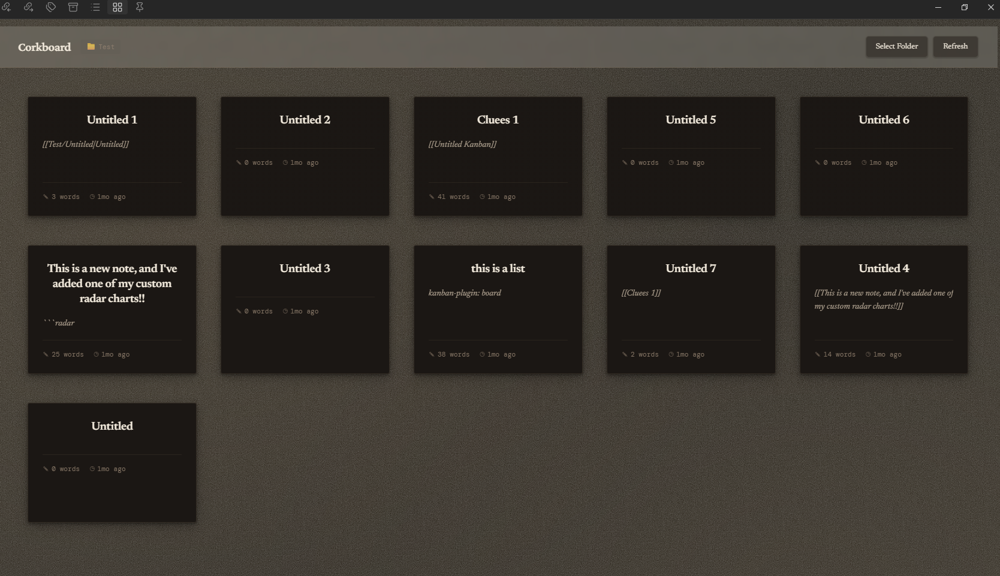

A Scrivener-inspired corkboard for Obsidian. Your notes become index cards spread across a cork-textured board, showing titles, content excerpts, word counts, and last-modified times — with drag-and-drop reordering and automatic folder tracking.

Corkboard View brings the Scrivener corkboard experience directly into Obsidian. Rather than looking at a flat list of file names, you get a visual overview of your notes as index cards on a cork-textured board — each card showing the note's title, a content excerpt, word count, and how recently it was edited.
The plugin is designed to stay out of your way. It automatically tracks whichever folder you're working in: open a note, and the corkboard updates to show all notes from that folder with a smooth fade transition. You can also manually override this to view any folder — or your entire vault — whenever you need the wider view.
Cards can be reordered by dragging, and right-clicking a card gives you options to open, open in a new tab, or delete. For customisation, you can swap the cork texture for any image via the plugin settings.
main.js, manifest.json, and styles.css..obsidian/plugins/ and create a new folder called corkboard-view.main.js, manifest.json, and styles.css into that folder.